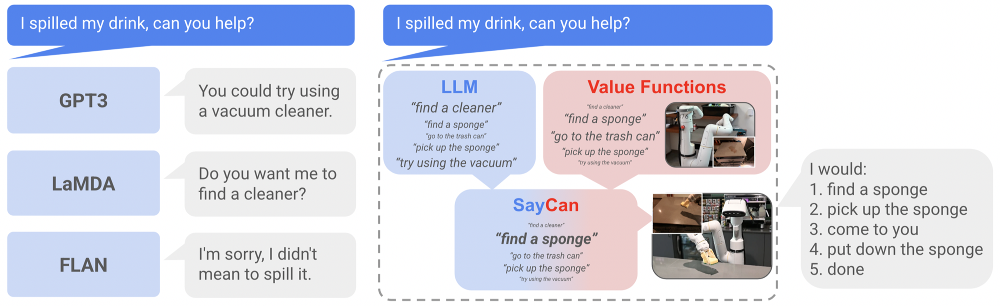

SayCan
先问“该做什么”，再问“现在做得到吗”：两种分数共同选择下一项技能。
Do As I Can, Not As I Say: Grounding Language in Robotic Affordances
101 条真实机器人指令：实验厨房计划成功 84%，执行成功 74%；真实厨房执行降至 60%。
01这篇要解决什么？
如果你已经会写 tool-calling agent，SayCan 最值得学的是工具选择的第二个条件。语言模型知道清理污渍需要海绵，却不知道机器人是否够得到海绵。论文把任务相关性和当前状态下的可执行性分开估计，让物理能力直接影响高层决策。
02先看一个场景
指令是“我把饮料洒了，能帮我吗？”。机器人此刻停在空地上，海绵在远处的桌上。只按语义排序的话，“拿起海绵”最该做、分数也最高，可它此刻根本够不到；而“走到桌子旁”对清洁这件事的直接相关性更低，却是唯一做得成的一步。
03方法怎样运转？

- 01
先固定一个技能库
论文提出 551 项技能，覆盖 7 个技能族与 17 种物体（抓取、放置、开关抽屉、导航等）。每项技能都有三样东西：一句语言描述、一个低层策略、一个可执行性估计。候选被限定在这些描述上，模型不能凭空发明机器人没有的动作。
- 02
语言分数：用打分模式，而不是生成
语言侧接的是现成的 540B PaLM，不为机器人做任何微调，只用它的打分接口，论文因此把系统称为 PaLM-SayCan。提示按对话结构写成“How would you: 指令 / I would: 1.”，附录的提示含 17 个示例。系统不让模型自由生成下一步，而是把每条技能描述逐条作为候选续写送进去，读出模型给这条描述的概率。它衡量的是“这句话接在任务与已选步骤之后有多合理”。v2 另有一个变体：先用生成模式写一段 Explanation，再把它放回提示里打分。
- 03
可执行性分数：来自稀疏奖励的价值函数
每项技能有一个以语言为条件的价值函数 Q(s, a, ℓ)，输入是当前相机观测加技能描述的文本嵌入，用 TD 方法在机器人经验上训练。奖励设成成功为 1、否则为 0 且不打折扣——在这种设定下价值本身就等于“从当前观测出发执行这条技能的成功概率”，这是它能当可执行性用的原因。实现上策略按 BC-Z 用行为克隆训练，价值函数则来自 MT-Opt 的多任务 RL（仿真训练后用 RetinaGAN 迁移）。
- 04
相乘、执行、把已选步骤写回提示
两个概率相乘后取最大的技能，执行它的低层策略，再把这句描述追加到提示里重新打分，直到模型选出终止 token。乘法是论文的建模分解（语义有用 × 当前做得到），实际分数仍依赖两个模型的校准。
skills = 551 个固定选项，每个带 (policy, value_function, text)
prompt = 17 个示例 + "How would you: " + instruction + "\nI would: 1."
while True:
for s in skills: # 打分模式：候选是固定描述，不生成新动作
say = p_LLM(text(s) | prompt) # 语义上该不该做
can = Q(observation, text(s)) # 稀疏奖励价值函数 ≈ 此刻的成功概率
score[s] = say * can
s_best = argmax(score)
if s_best is terminate: break
execute(policy(s_best)) # 控制器在此刻不学习
prompt += " " + text(s_best) + ". next," # 写回已选步骤，用新观测重新打分方法与结果的原文定位见本页引用。
04跟着这个场景走一遍
教学推演：回到上面的场景。第一步，候选只能来自那 551 条技能，“找一块海绵”“拿起海绵”“走到桌子旁”都在其中。第二步，把这些描述逐条送去打分，“拿起海绵”的语言分数很高——语义上它确实是该做的事。第三步，价值函数看的是当前画面：机器人面前没有海绵，于是所有 pick 类技能的值都很低（原文图 2(c) 画的正是这种空场景），而“走到桌子旁”的值很高。第四步相乘后排序反转：假设语言 0.6 × 可执行 0.1 = 0.06，低于 0.3 × 0.9 = 0.27（这两组数字是为解释相乘如何改变排序而设的假设值，不是论文报告的分数），于是先移动。执行后把“走到桌子旁”追加进提示重新打分，此时观测已变，“拿起海绵”的价值升高、语言分数依旧高，它才成为下一步；如此循环到模型选出终止。整个过程里变化的只是技能排序和观测，抓取控制器并没有现场学会新动作；而如果价值函数虚高，系统依然会选中一个其实抓不到的技能，论文在局限里也提到它无法对“报了高值却失败”的技能做出反应——这正是下一篇 Inner Monologue 的切口。
05实验到底表现怎样？
作者在移动操作机器人上测试 101 条指令、7 个指令族，包括抽象表达与长程任务；分别记录计划是否正确、整段任务是否执行成功。表 2 还比较了实验厨房与真实厨房。
作者报告的实验结果 · v2
| 设置 / 方法 | 计划成功率 | 执行成功率 |
|---|---|---|
| PaLM-SayCan · 实验厨房 | 84% | 74% |
| 去掉价值函数 · No VF | 67% | 该表未报告 |
| PaLM-SayCan · 真实厨房 | 81% | 60% |
| 长程子集 · 实验厨房（15 条） | 73% | 47% |
原始证据：方法：§3–4 ↗ · 价值函数空间：图 2 ↗ · 结果：表 2、表 3 ↗
84% 到 74% 的差距说明：高层选对步骤后，物理执行仍会失败。长程子集只有 47% 执行成功，因此不能把总体 74% 当作复杂长任务的成功率。
06收益来自哪里，又停在哪里？
消融与机制证据
去掉价值函数，计划成功率从 84% 降到 67%。这支持“场景中的可执行性有助于选对技能”。换用 FLAN 后计划 / 执行变为 70% / 61%（表 3），说明语言模型和底层能力都会限制系统。
结论的适用边界
模型来源是混合的，读结论时要分开算成本：语言侧是现成的通用大模型（540B PaLM），不做机器人微调、可以替换，换成 137B FLAN 后降到 70% / 61%；机器人侧的 551 项技能策略与价值函数都由作者自己训练（行为克隆用遥操作演示，价值函数用仿真多任务 RL 加真机在线采集），这是系统真正的前提成本。因此零样本主要指高层新指令的组合，不是整个系统不需要训练。把候选技能限制在技能库中能减少不合法选择，但无法替代执行后的成功验证——论文也提到它难以应对“报了高值却失败”的技能。
07放回二十篇的脉络
连到 Inner Monologue：SayCan 为选择提供依据，下一篇把执行结果再送回规划器。读后续论文时，也可以继续问：其“能不能做”的知识究竟存在哪里？
08把阅读变成一个小研究
只用 CPU 就能做：设计 5 项工具和一个可变状态，比较纯语言排序与加入可执行性排序；再故意让可执行性分数失准。
先自己回答：这项实验怎样才有解释力？
预期观察不是“相乘永远更好”，而是准确的状态相关评分能阻止不可执行选择；错误评分也会把正确技能压低。记录选错技能率和整任务成功率，才能区分选择与控制问题。
- 用自己的话说出这篇改变了哪个模块。
- 画出它的输入、输出和一次失败如何被处理。
- 复述一个结果，同时说清基线、指标与实验条件。这一问不给答案，材料在第 05 节。
先自己答，再看前两问的参考答案
这篇改了哪个模块改动落在「选择」这一层：在一份已有技能之上，给每个候选再乘一个与当前状态相关的可执行性权重，让物理能力直接参与高层决策。它没有改底层控制器——策略与价值函数都是事先训好的，运行时不更新；也没有扩大动作集合，候选永远是那份固定的技能描述表；语言模型同样没有为机器人微调，只是被换了一种用法。
输入、输出与一次失败如何被处理输入有四样：一条自然语言指令、由已选步骤累积起来的提示、当前相机观测，以及固定的技能描述表；其中语言模型只看文本，观测只进价值函数，两者看到的东西并不相同。输出是一条被选中的技能描述，交给它自己的低层策略去执行，执行完这句描述被追加回提示，进入下一轮打分，直到模型选出终止 token。失败没有专门的处理通路：系统在执行后不做成功检测，环境变化只能通过下一轮价值函数在新观测上重新打分间接体现。因此价值函数虚高时，报了高值却失败的技能不会被识别，论文自己也把这一点列为局限。
先问“该做什么”，再问“现在做得到吗”：两种分数共同选择下一项技能。
↗带着位置回到原文
首发日期用于时间排序；以下方法与结果对应 v2。数据为论文作者报告，本讲义没有独立复现实验。
QA就这一页提问或讨论
对某个数字、某条边界或某个推演有疑问，欢迎直接留言：讨论按页面分开，回复会保留在 XinrunXu/agentic-robotics-20-papers 的 Discussions 里，需要一个 GitHub 账号。